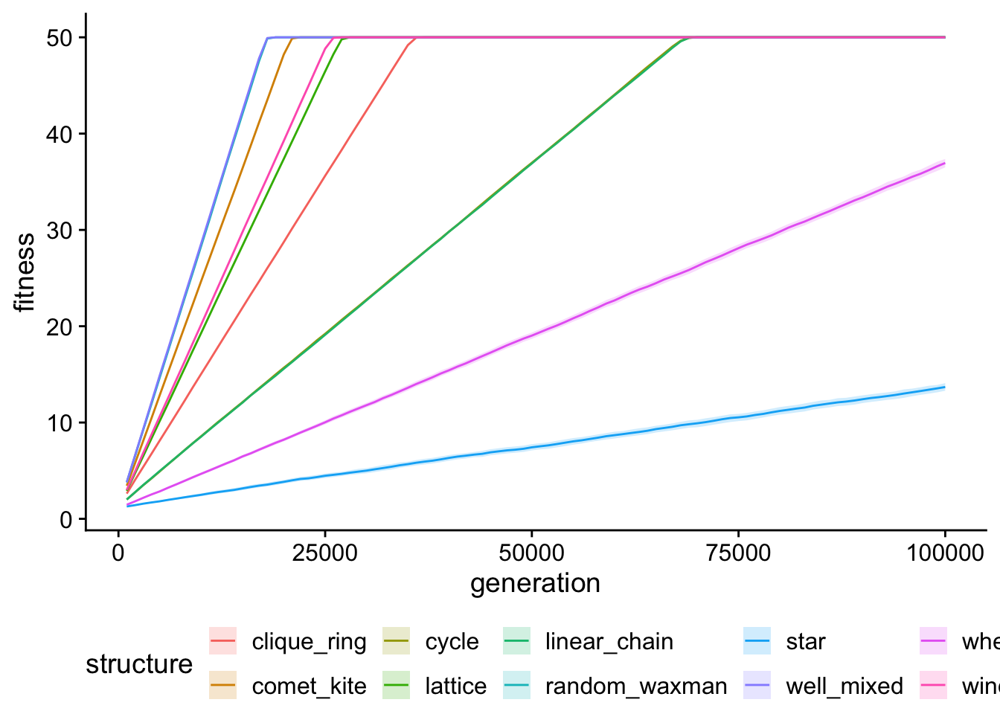
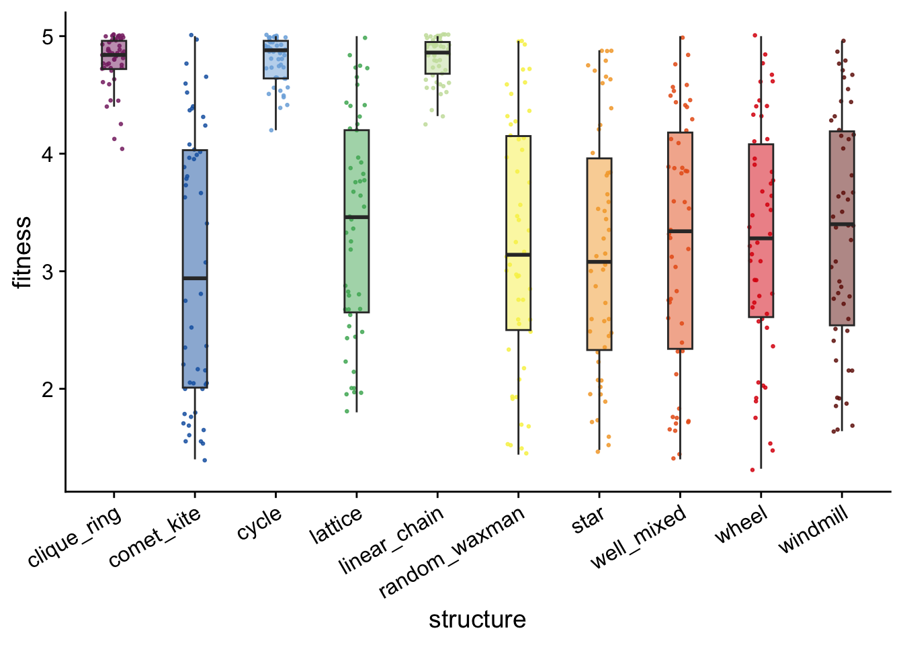

Chapter 4 Simple model - Varied spatial structure experiment analyses
4.1 Dependencies and setup
library(tidyverse)
library(cowplot)
library(RColorBrewer)
library(khroma)
library(rstatix)
library(knitr)
library(kableExtra)
library(infer)
source("https://gist.githubusercontent.com/benmarwick/2a1bb0133ff568cbe28d/raw/fb53bd97121f7f9ce947837ef1a4c65a73bffb3f/geom_flat_violin.R")# Check if Rmd is being compiled using bookdown
bookdown <- exists("bookdown_build")experiment_slug <- "vg-experiments"
working_directory <- paste(
"experiments",
"mabe2-exps",
experiment_slug,
sep = "/"
)
# Adjust working directory if being knitted for bookdown build.
if (bookdown) {
working_directory <- paste0(
bookdown_wd_prefix,
working_directory
)
}# Configure our default graphing theme
theme_set(theme_cowplot())
# Create a directory to store plots
plot_dir <- paste(
working_directory,
"rmd_plots",
sep = "/"
)
dir.create(
plot_dir,
showWarnings = FALSE
)4.2 Max organism data analyses
max_generation <- 100000
max_org_data_path <- paste(
working_directory,
"data",
"combined_max_org_data.csv",
sep = "/"
)
# Data file has time series
max_org_data_ts <- read_csv(max_org_data_path)
max_org_data_ts <- max_org_data_ts %>%
mutate(
landscape = as.factor(landscape),
structure = as.factor(structure),
) %>%
mutate(
valleys_crossed = case_when(
landscape == "Valley crossing" ~ round(log(fitness, base = 1.5)),
.default = 0
)
)
# Get tibble with just final generation
max_org_data <- max_org_data_ts %>%
filter(generation == max_generation)Check that replicate count for each condition matches expectations.
run_summary <- max_org_data %>%
group_by(landscape, structure) %>%
summarize(
n = n()
)
print(run_summary, n = 30)## # A tibble: 30 × 3
## # Groups: landscape [3]
## landscape structure n
## <fct> <fct> <int>
## 1 Multipath clique_ring 50
## 2 Multipath comet_kite 50
## 3 Multipath cycle 50
## 4 Multipath lattice 50
## 5 Multipath linear_chain 50
## 6 Multipath random_waxman 50
## 7 Multipath star 50
## 8 Multipath well_mixed 50
## 9 Multipath wheel 50
## 10 Multipath windmill 50
## 11 Single gradient clique_ring 50
## 12 Single gradient comet_kite 50
## 13 Single gradient cycle 50
## 14 Single gradient lattice 50
## 15 Single gradient linear_chain 50
## 16 Single gradient random_waxman 50
## 17 Single gradient star 50
## 18 Single gradient well_mixed 50
## 19 Single gradient wheel 50
## 20 Single gradient windmill 50
## 21 Valley crossing clique_ring 50
## 22 Valley crossing comet_kite 50
## 23 Valley crossing cycle 50
## 24 Valley crossing lattice 50
## 25 Valley crossing linear_chain 50
## 26 Valley crossing random_waxman 50
## 27 Valley crossing star 50
## 28 Valley crossing well_mixed 50
## 29 Valley crossing wheel 50
## 30 Valley crossing windmill 504.2.1 Fitness in smooth gradient landscape
Maximum fitness
single_gradient_final_fitness_plt <- ggplot(
data = filter(max_org_data, landscape == "Single gradient"),
mapping = aes(
x = structure,
y = fitness,
fill = structure
)
) +
geom_flat_violin(
position = position_nudge(x = .2, y = 0),
alpha = .8
) +
geom_point(
mapping = aes(color = structure),
position = position_jitter(width = .15),
size = .5,
alpha = 0.8
) +
geom_boxplot(
width = .1,
outlier.shape = NA,
alpha = 0.5
) +
theme(
legend.position = "none",
axis.text.x = element_text(
angle = 30,
hjust = 1
)
)
ggsave(
filename = paste0(plot_dir, "/single_gradient_final_fitness.pdf"),
plot = single_gradient_final_fitness_plt,
width = 15,
height = 10
)
single_gradient_final_fitness_pltMaximum fitness over time
single_gradient_fitness_ts_plt <- ggplot(
data = filter(max_org_data_ts, landscape == "Single gradient"),
mapping = aes(
x = generation,
y = fitness,
color = structure,
fill = structure
)
) +
stat_summary(fun = "mean", geom = "line") +
stat_summary(
fun.data = "mean_cl_boot",
fun.args = list(conf.int = 0.95),
geom = "ribbon",
alpha = 0.2,
linetype = 0
) +
theme(legend.position = "bottom")
ggsave(
plot = single_gradient_fitness_ts_plt,
filename = paste0(
plot_dir,
"/single_gradient_fitness_ts.pdf"
),
width = 15,
height = 10
)
single_gradient_fitness_ts_plt
Time to maximum fitness
# Find all rows with maximum fitness value, then get row with minimum generation,
# then project out expected generation to max (for runs that didn't finish)
max_possible_fit = 50
time_to_max_single_gradient <- max_org_data_ts %>%
filter(landscape == "Single gradient") %>%
group_by(rep, structure) %>%
slice_max(
fitness,
n = 1
) %>%
slice_min(
generation,
n = 1
) %>%
mutate(
proj_gen_max = (max_possible_fit / fitness) * generation
)single_gradient_gen_max_proj_plt <- ggplot(
data = time_to_max_single_gradient,
mapping = aes(
x = structure,
y = proj_gen_max,
fill = structure
)
) +
geom_flat_violin(
position = position_nudge(x = .2, y = 0),
alpha = .8
) +
geom_point(
mapping = aes(color = structure),
position = position_jitter(width = .15),
size = .5,
alpha = 0.8
) +
geom_boxplot(
width = .1,
outlier.shape = NA,
alpha = 0.5
) +
scale_y_log10(
guide = "axis_logticks"
) +
# scale_y_continuous(
# trans="pseudo_log",
# breaks = c(10, 100, 1000, 10000, 100000, 1000000)
# ,limits = c(10, 100, 1000, 10000, 100000, 1000000)
# ) +
geom_hline(
yintercept = max_generation,
linetype = "dashed"
) +
theme(
legend.position = "none",
axis.text.x = element_text(
angle = 30,
hjust = 1
)
)
ggsave(
filename = paste0(plot_dir, "/single_gradient_gen_max_proj.pdf"),
plot = single_gradient_gen_max_proj_plt,
width = 15,
height = 10
)
single_gradient_gen_max_proj_pltRank ordering of time to max fitness values
time_to_max_single_gradient %>%
group_by(structure) %>%
summarize(
reps = n(),
median_proj_gen = median(proj_gen_max),
mean_proj_gen = mean(proj_gen_max)
) %>%
arrange(
mean_proj_gen
)## # A tibble: 10 × 4
## structure reps median_proj_gen mean_proj_gen
## <fct> <int> <dbl> <dbl>
## 1 well_mixed 50 18000 18240
## 2 random_waxman 50 18000 18260
## 3 comet_kite 50 21000 21220
## 4 windmill 50 26000 26100
## 5 lattice 50 27000 27460
## 6 clique_ring 50 36000 36020
## 7 cycle 50 69000 68840
## 8 linear_chain 50 69000 69080
## 9 wheel 50 135481. 135502.
## 10 star 50 361785. 366603.kruskal.test(
formula = proj_gen_max ~ structure,
data = time_to_max_single_gradient
)##
## Kruskal-Wallis rank sum test
##
## data: proj_gen_max by structure
## Kruskal-Wallis chi-squared = 490.93, df = 9, p-value < 2.2e-16wc_results <- pairwise.wilcox.test(
x = time_to_max_single_gradient$proj_gen_max,
g = time_to_max_single_gradient$structure,
p.adjust.method = "holm",
exact = FALSE
)
single_gradient_proj_gen_max_wc_table <- kbl(wc_results$p.value) %>%
kable_styling()
save_kable(
single_gradient_proj_gen_max_wc_table,
paste0(plot_dir, "/single_gradient_proj_gen_max_wc_table.pdf")
)
single_gradient_proj_gen_max_wc_table| clique_ring | comet_kite | cycle | lattice | linear_chain | random_waxman | star | well_mixed | wheel | |
|---|---|---|---|---|---|---|---|---|---|
| comet_kite | 0 | NA | NA | NA | NA | NA | NA | NA | NA |
| cycle | 0 | 0 | NA | NA | NA | NA | NA | NA | NA |
| lattice | 0 | 0 | 0.0000000 | NA | NA | NA | NA | NA | NA |
| linear_chain | 0 | 0 | 0.2915242 | 0 | NA | NA | NA | NA | NA |
| random_waxman | 0 | 0 | 0.0000000 | 0 | 0 | NA | NA | NA | NA |
| star | 0 | 0 | 0.0000000 | 0 | 0 | 0.0000000 | NA | NA | NA |
| well_mixed | 0 | 0 | 0.0000000 | 0 | 0 | 0.8218339 | 0 | NA | NA |
| wheel | 0 | 0 | 0.0000000 | 0 | 0 | 0.0000000 | 0 | 0 | NA |
| windmill | 0 | 0 | 0.0000000 | 0 | 0 | 0.0000000 | 0 | 0 | 0 |
library(boot)
# Define sample mean function
samplemean <- function(x, d) {
return(mean(x[d]))
}
summary_gen_to_max <- tibble(
structure = character(),
proj_gen_max_mean = double(),
proj_gen_max_mean_ci_low = double(),
proj_gen_max_mean_ci_high = double()
)
structures <- levels(time_to_max_single_gradient$structure)
for (struct in structures) {
boot_result <- boot(
data = filter(
time_to_max_single_gradient,
structure == struct
)$proj_gen_max,
statistic = samplemean,
R = 10000
)
result_ci <- boot.ci(boot_result, conf = 0.99, type = "perc")
m <- result_ci$t0
low <- result_ci$percent[4]
high <- result_ci$percent[5]
summary_gen_to_max <- summary_gen_to_max %>%
add_row(
structure = struct,
proj_gen_max_mean = m,
proj_gen_max_mean_ci_low = low,
proj_gen_max_mean_ci_high = high
)
}
wm_median <- median(
filter(time_to_max_single_gradient, structure == "well_mixed")$proj_gen_max
)
simple_time_to_max_plt <- ggplot(
data = summary_gen_to_max,
mapping = aes(
x = structure,
y = proj_gen_max_mean,
fill = structure,
color = structure
)
) +
# geom_point() +
geom_col() +
geom_linerange(
aes(
ymin = proj_gen_max_mean_ci_low,
ymax = proj_gen_max_mean_ci_high
),
color = "black",
linewidth = 0.75,
lineend = "round"
) +
# scale_y_log10(
# guide = "axis_logticks"
# ) +
geom_hline(
yintercept = max_generation,
linetype = "dashed"
) +
geom_hline(
yintercept = wm_median,
linetype = "dotted",
color = "orange"
) +
scale_color_discreterainbow() +
scale_fill_discreterainbow() +
coord_flip() +
theme(
legend.position = "none",
axis.text.x = element_text(
angle = 30,
hjust = 1
)
)
ggsave(
filename = paste0(plot_dir, "/simple_time_to_max.pdf"),
plot = simple_time_to_max_plt,
width = 8,
height = 4
)
simple_time_to_max_plt4.2.2 Fitness in multi-path landscape
multipath_final_fitness_plt <- ggplot(
data = filter(max_org_data, landscape == "Multipath"),
mapping = aes(
x = structure,
y = fitness,
fill = structure
)
) +
# geom_flat_violin(
# position = position_nudge(x = .2, y = 0),
# alpha = .8
# ) +
geom_point(
mapping = aes(color = structure),
position = position_jitter(width = .15),
size = .5,
alpha = 0.8
) +
geom_boxplot(
width = .3,
outlier.shape = NA,
alpha = 0.5
) +
scale_color_discreterainbow() +
scale_fill_discreterainbow() +
theme(
legend.position = "none",
axis.text.x = element_text(
angle = 30,
hjust = 1
)
)
ggsave(
filename = paste0(plot_dir, "/multipath_final_fitness.pdf"),
plot = multipath_final_fitness_plt,
width = 6,
height = 4
)
multipath_final_fitness_plt
Max fitness over time
multipath_fitness_ts_plt <- ggplot(
data = filter(max_org_data_ts, landscape == "Multipath"),
mapping = aes(
x = generation,
y = fitness,
color = structure,
fill = structure
)
) +
stat_summary(fun = "mean", geom = "line") +
stat_summary(
fun.data = "mean_cl_boot",
fun.args = list(conf.int = 0.95),
geom = "ribbon",
alpha = 0.2,
linetype = 0
) +
theme(legend.position = "bottom")
ggsave(
plot = multipath_fitness_ts_plt,
filename = paste0(
plot_dir,
"/multipath_fitness_ts.pdf"
),
width = 15,
height = 10
)
multipath_fitness_ts_pltRank ordering of fitness values
max_org_data %>%
filter(landscape == "Multipath") %>%
group_by(structure) %>%
summarize(
reps = n(),
median_fitness = median(fitness),
mean_fitness = mean(fitness)
) %>%
arrange(
desc(mean_fitness)
)## # A tibble: 10 × 4
## structure reps median_fitness mean_fitness
## <fct> <int> <dbl> <dbl>
## 1 linear_chain 50 4.86 4.80
## 2 cycle 50 4.88 4.79
## 3 clique_ring 50 4.84 4.79
## 4 lattice 50 3.46 3.38
## 5 windmill 50 3.4 3.34
## 6 wheel 50 3.28 3.27
## 7 well_mixed 50 3.34 3.25
## 8 random_waxman 50 3.14 3.23
## 9 star 50 3.08 3.17
## 10 comet_kite 50 2.94 3.06kruskal.test(
formula = fitness ~ structure,
data = filter(max_org_data, landscape == "Multipath")
)##
## Kruskal-Wallis rank sum test
##
## data: fitness by structure
## Kruskal-Wallis chi-squared = 246.11, df = 9, p-value < 2.2e-16wc_results <- pairwise.wilcox.test(
x = filter(max_org_data, landscape == "Multipath")$fitness,
g = filter(max_org_data, landscape == "Multipath")$structure,
p.adjust.method = "holm",
exact = FALSE
)
mp_fitness_wc_table <- kbl(wc_results$p.value) %>%
kable_styling()
save_kable(
mp_fitness_wc_table,
paste0(plot_dir, "/multipath_fitness_wc_table.pdf")
)
mp_fitness_wc_table| clique_ring | comet_kite | cycle | lattice | linear_chain | random_waxman | star | well_mixed | wheel | |
|---|---|---|---|---|---|---|---|---|---|
| comet_kite | 0 | NA | NA | NA | NA | NA | NA | NA | NA |
| cycle | 1 | 0 | NA | NA | NA | NA | NA | NA | NA |
| lattice | 0 | 1 | 0 | NA | NA | NA | NA | NA | NA |
| linear_chain | 1 | 0 | 1 | 0 | NA | NA | NA | NA | NA |
| random_waxman | 0 | 1 | 0 | 1 | 0 | NA | NA | NA | NA |
| star | 0 | 1 | 0 | 1 | 0 | 1 | NA | NA | NA |
| well_mixed | 0 | 1 | 0 | 1 | 0 | 1 | 1 | NA | NA |
| wheel | 0 | 1 | 0 | 1 | 0 | 1 | 1 | 1 | NA |
| windmill | 0 | 1 | 0 | 1 | 0 | 1 | 1 | 1 | 1 |
4.2.3 Valleys crossed in valley-crossing landscape
valleycrossing_valleys_plt <- ggplot(
data = filter(max_org_data, landscape == "Valley crossing"),
mapping = aes(
x = structure,
y = valleys_crossed,
fill = structure
)
) +
# geom_flat_violin(
# position = position_nudge(x = .2, y = 0),
# alpha = .8
# ) +
geom_point(
mapping = aes(color = structure),
position = position_jitter(width = .15),
size = .5,
alpha = 0.8
) +
geom_boxplot(
width = .3,
outlier.shape = NA,
alpha = 0.5
) +
scale_color_discreterainbow() +
scale_fill_discreterainbow() +
theme(
legend.position = "none",
axis.text.x = element_text(
angle = 30,
hjust = 1
)
)
ggsave(
filename = paste0(plot_dir, "/valleycrossing_valleys_crossed.pdf"),
plot = valleycrossing_valleys_plt,
width = 6,
height = 4
)
valleycrossing_valleys_pltRank ordering of fitness values
vc <- max_org_data %>%
filter(landscape == "Valley crossing") %>%
group_by(structure) %>%
summarize(
reps = n(),
median_valleys_crossed = median(valleys_crossed),
mean_valleys_crossed = mean(valleys_crossed),
min_valleys_crossed = min(valleys_crossed)
) %>%
arrange(
desc(mean_valleys_crossed)
)
vc## # A tibble: 10 × 5
## structure reps median_valleys_crossed mean_valleys_crossed
## <fct> <int> <dbl> <dbl>
## 1 cycle 50 100 100
## 2 linear_chain 50 100 100
## 3 lattice 50 41 41.9
## 4 star 50 21 21.5
## 5 comet_kite 50 20 20.5
## 6 windmill 50 11 11.6
## 7 clique_ring 50 10 10.3
## 8 random_waxman 50 9 8.76
## 9 well_mixed 50 8 8.46
## 10 wheel 50 6 6.6
## # ℹ 1 more variable: min_valleys_crossed <dbl>vc$min_valleys_crossed## [1] 100 100 28 12 13 5 5 3 4 1kruskal.test(
formula = valleys_crossed ~ structure,
data = filter(max_org_data, landscape == "Valley crossing")
)##
## Kruskal-Wallis rank sum test
##
## data: valleys_crossed by structure
## Kruskal-Wallis chi-squared = 444.04, df = 9, p-value < 2.2e-16wc_results <- pairwise.wilcox.test(
x = filter(max_org_data, landscape == "Valley crossing")$valleys_crossed,
g = filter(max_org_data, landscape == "Valley crossing")$structure,
p.adjust.method = "holm",
exact = FALSE
)
vc_valleys_crossed_wc_table <- kbl(wc_results$p.value) %>%
kable_styling()
save_kable(
vc_valleys_crossed_wc_table,
paste0(plot_dir, "/valley_crossing_valleys_wc_table.pdf")
)
vc_valleys_crossed_wc_table| clique_ring | comet_kite | cycle | lattice | linear_chain | random_waxman | star | well_mixed | wheel | |
|---|---|---|---|---|---|---|---|---|---|
| comet_kite | 0.0000000 | NA | NA | NA | NA | NA | NA | NA | NA |
| cycle | 0.0000000 | 0.0000000 | NA | NA | NA | NA | NA | NA | NA |
| lattice | 0.0000000 | 0.0000000 | 0 | NA | NA | NA | NA | NA | NA |
| linear_chain | 0.0000000 | 0.0000000 | NaN | 0 | NA | NA | NA | NA | NA |
| random_waxman | 0.0414336 | 0.0000000 | 0 | 0 | 0 | NA | NA | NA | NA |
| star | 0.0000000 | 0.4016992 | 0 | 0 | 0 | 0.0000000 | NA | NA | NA |
| well_mixed | 0.0028498 | 0.0000000 | 0 | 0 | 0 | 0.4620430 | 0 | NA | NA |
| wheel | 0.0000001 | 0.0000000 | 0 | 0 | 0 | 0.0029961 | 0 | 0.0119690 | NA |
| windmill | 0.0895493 | 0.0000000 | 0 | 0 | 0 | 0.0001323 | 0 | 0.0000028 | 0 |